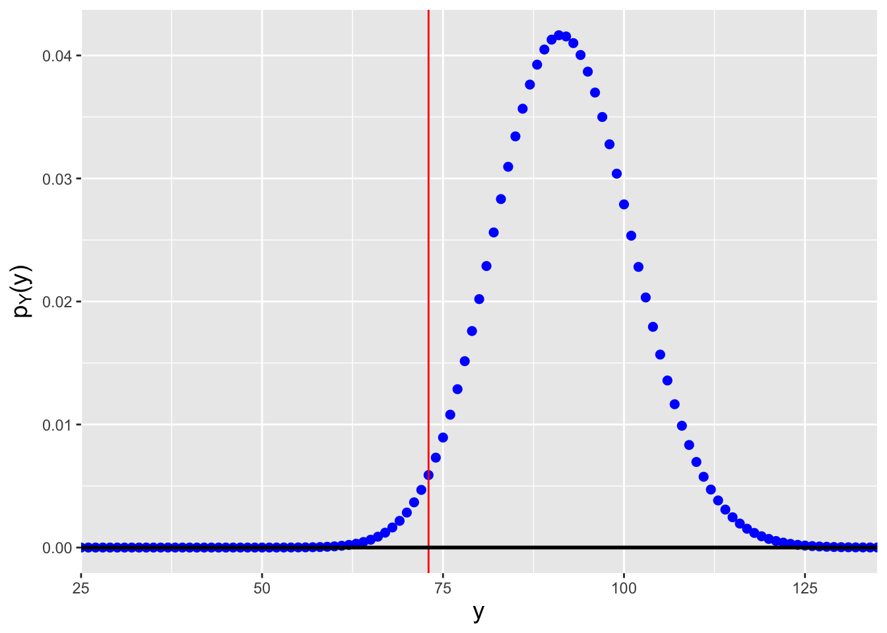
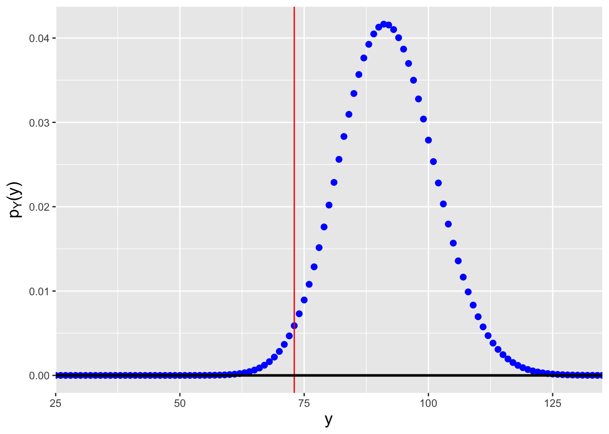

4 The Poisson (and Related) Distributions
4.1 Motivation
One of the challenges of a Prussian soldiers life in the 19th century was avoiding being kicked by horses. This was no trivial matter: over one 20-year period, 122 soldiers died from injuries sustained while being kicked by horses. The statistician Ladislaus Bortkiewicz compiled the following data, showing the number of soldiers killed by horse kicks in any one Prussian army corps in any one year:
| \(x\) | \(N(x)\) |
|---|---|
| 0 | 109 |
| 1 | 65 |
| 2 | 22 |
| 3 | 3 |
| 4 | 1 |
\(x\) is the number of deaths observed in any one Prussian army corp in any one year, and \(N(x)\) is the number of corps-years in which \(x\) deaths were observed. (\(N(x)\) sums to \(20 \cdot 10 = 200\), reflecting that the compiled data represent 10 army corps observed over a 20-year period.)
The data presented above are an example of a process, i.e., a sequence of observations, but we can immediately see that unlike the case with coin flips, this process is not a Bernoulli process. Thats because the number of possible outcomes is greater than 2 (0 and 1); in fact, the number of possible outcomes is countably infinite, so this is not even a multinomial process. Well, the reader might say, we could simply discretize the data more finely, so that the number of possible outcomes is at least finite (multinomial) or better yet falls to two (Bernoulli). Lets get monthly data, or daily data, or hourly data. However, there is no time period \(\Delta t\) for which the number of possible outcomes is limited to some maximum value: in theory, an infinite number of soldiers could die in the same second, or even the same nanosecond, etc.
But lets keep playing with this idea of making the time periods smaller and smaller. Let the number of time periods into which we divide our observation interval, \(k\), go to infinity such that the probability of observing a horse-kick death \(p \rightarrow 0\) and such that \(kp \rightarrow \lambda\), where \(\lambda\) is a constant. Under these conditions, as we will see in the next section, the binomial distribution transforms into the Poisson distribution, which Bortkiewicz dubbed the law of small numbers. Before we go to the section, though, lets define the Poisson distribution in words: it gives the probability of observing a particular number of events (counts) in a fixed interval of space and/or time, assuming there is a constant mean rate of events and the occurrence of any one event is independent of the occurrence of other events.
(For those who do not wish to wait until the section on point estimation to know the final answer: \(\hat{\lambda}_{MLE} = 0.61\), i.e., if the data are plausibly Poisson distributed [which is another question to ask entirely!], the rate of death was 0.61 soldiers per corps per year.)
4.2 Probability Mass Function
Recall: a probability mass function is one way to represent a discrete probablity distribution, and it has the properties (a) \(0 \leq P(X=x) \leq 1\) and (b) \(\sum_x P(X=x) = 1\), where the sum is over all possible values of \(x\).
\[\begin{align*} P(X=x) &= \binom{k}{x} p^x (1-p)^{k-x} \\ &= \frac{k!}{x!(k-x)!} \left(\frac{\lambda}{k}\right)^x \left(1-\frac{\lambda}{k}\right)^{k-x} \\ &= \frac{k!}{(k-x)! k^x} \frac{\lambda^x}{x!} \left(1-\frac{\lambda}{k}\right)^{k-x} \\ &= \left(\frac{k}{k}\right) \left(\frac{k-1}{k}\right) \cdots \left(\frac{k-x+1}{k}\right) \left(\frac{\lambda^x}{x!}\right) \left(1-\frac{\lambda}{k}\right)^{k-x} \rightarrow \frac{\lambda^x}{x!} \left(1-\frac{\lambda}{k}\right)^{k-x} ~\mbox{as}~~ k \rightarrow \infty \\ &= \frac{\lambda^x}{x!} \left(1-\frac{\lambda}{k}\right)^k \left(1-\frac{\lambda}{k}\right)^{-x} \rightarrow \frac{\lambda^x}{x!} \left(1-\frac{\lambda}{k}\right)^k ~\mbox{as}~~ k \rightarrow \infty \,. \end{align*}\] At this point, we concentrate on the parenthetical term above. Given that \[ \lim_{k \rightarrow \infty} \left(1 - \frac{1}{k}\right)^k = e^{-1} \,, \] we can state that \[ \lim_{k \rightarrow \infty} \left(1 - \frac{1}{k/\lambda}\right)^{k/\lambda} = e^{-1} \implies \lim_{k \rightarrow \infty} \left(1 - \frac{1}{k/\lambda}\right)^k = e^{-k} \,. \] We are now in a position to write down the probability mass function for a Poisson random variable (see Figure 4.1): \[ P(X=x) = p(x) = \frac{\lambda^x}{x!} e^{-\lambda} ~\mbox{where}~ \lambda > 0 ~\mbox{and}~ x \in [0,\infty) \,. \] A Poisson random variable converges in distribution to a normal random variable as \(\lambda \rightarrow \infty\), a result which affects how the Poisson has historically been implemented in hypothesis testing. (We will elaborate on this point when we return to the chi-square goodness of fit test later in the chapter.) To indicate that we have sampled a datum from a Poisson distribution, we write \(X \sim\) Poisson(\(\lambda\)). The expected value and variance of the Poisson distribution are \(E[X] = \lambda\) and \(V[X] = \lambda\), respectively; the former is derived below in an example.
Figure 4.1: Poisson probability mass functions for \(\lambda = 1\) (red), 5 (green), and 10 (blue).
| quantity | R function call |
|---|---|
| PMF | dpois(x,lambda) |
| CDF | ppois(x,lambda) |
| Inverse CDF | qpois(q,lambda) |
| \(n\) iid random samples | rpois(n,lambda) |
4.2.1 The Expected Value of a Poisson Random Variable
Recall: the expected value of a discretely distributed random variable is \[ E[X] = \sum_x x P(X=x) = \sum_x x p_X(x) \,, \] where the sum is over all \(x\) for which \(p_X(x) > 0\).
For a Poisson distribution, the expected value is \[ E[X] = \sum_{x=0}^\infty x \frac{\lambda^x}{x!} e^{-\lambda} = \sum_{x=1}^\infty x \frac{\lambda^x}{x!} e^{-\lambda} = \sum_{x=1}^\infty \frac{\lambda^x}{(x-1)!} e^{-\lambda} \,. \] The goal is to move constants into or out of the summation so that the summation becomes one of a probability mass function over the entire domain of a distribution. Here, we move \(\lambda\) out of the summation, and make the substitution \(y = x-1\); the summand then takes on the form of a Poisson pmf, summed over its entire domain, so the summation evaluates to 1: \[ E[X] = \lambda \sum_{x=1}^\infty \frac{\lambda^{x-1}}{(x-1)!} e^{-\lambda} = \lambda \sum_{y=0}^\infty \frac{\lambda^{y}}{y!} e^{-\lambda} = \lambda \,. \] Note that a similar calculation that starts with the derivation of \(E[X(X-1)]\) yields the variance.
4.3 Cumulative Distribution Function
Recall: the cumulative distribution function, or cdf, is another means by which to encapsulate information about a probability distribution. For a discrete distribution, it is defined as \(F_X(x) = \sum_{y\leq x} p_Y(y)\), and it is defined for all values \(x \in (-\infty,\infty)\), with \(F_X(-\infty) = 0\) and \(F_X(\infty) = 1\).
For the Poisson distribution, the cdf is
\[
F_X(x) = \sum_{y=0}^{\lfloor x \rfloor} p_Y(y) = \sum_{y=0}^{\lfloor x \rfloor} \frac{\lambda^y}{y!} \exp(-\lambda) = \frac{\Gamma(\lfloor x+1 \rfloor,\lambda)}{\lfloor x \rfloor !} \,,
\]
where \(\lfloor x \rfloor\) denotes the largest integer that is less than or
equal to \(x\) (e.g., if \(x\) = 8.33, \(\lfloor x \rfloor\) = 8),
and \(\Gamma(\cdot,\cdot)\) is the upper incomplete gamma function
\[
\Gamma(\lfloor x+1 \rfloor,\lambda) = \int_{\lambda}^\infty u^{\lfloor x \rfloor} e^{-u} du \,.
\]
(An example of an R function which computes the upper incomplete
gamma function is incgam() in the pracma package.)
As we are dealing with a probability mass function, the
cdf is a step function, as illustrated in the left panel of
Figure 4.2.
Recall that because of the step-function nature of the cdf,
the form of inequalities in a probabilistic statement matter: e.g.,
\(P(X < x)\) and \(P(X \leq x)\) will not be the same
if \(x\) is zero or a positive integer.
Recall: an inverse cdf function \(F_X^{-1}(\cdot)\) takes as input the total probability \(q \in [0,1]\) in the range \((-\infty,x]\) and returns the value of \(x\). A discrete distribution has no unique inverse cdf; it is convention to utilize the generalized inverse cdf, \(x = F_X^{-1}(q) = \mbox{inf}\{x : F_X(x) \geq q\}\), where inf indicates the return the smallest value of \(x\) such that \(F_X(x) \geq q\).
In the right panel of Figure 4.2, we display the inverse cdf for the same distribution used to generate the figure in the left panel (\(\lambda = 2\)). Like the cdf, the inverse cdf for a discrete distribution is a step function.

Figure 4.2: Illustration of the cumulative distribution function \(F_X(x)\) (left) and inverse cumulative distribution function \(F_X^{-1}(q)\) (right) for a Poisson distribution with \(\lambda=2\). Note that because the domain of the Poisson distribution is countably infinite, we do not reach \(F_X(x) = 1\) in this example.
4.3.1 Computing Probabilities
- If \(X \sim\) Poisson(5), which is \(P(4 \leq X < 6)\)?
We first note that due to the form of the inequality, we do not include \(X=6\) in the computation. Thus \(P(4 \leq X < 6) = p_X(4) + p_X(5)\), which equals \[ \frac{5^4}{4!}e^{-5} + \frac{5^5}{5!}e^{-5} = \frac{5^4}{4!}e^{-5} \left( 1 + \frac{5}{5} \right) = 2\frac{5^4}{4!}e^{-5} = 0.351\,. \] If we call on
R:
dpois(4,lambda=5) + dpois(5,lambda=5)## [1] 0.3509347We can also utilize cdf functions here: \(P(4 \leq X < 6) = P(X < 6) - P(X < 4) = P(X \leq 5) - P(X \leq 3) = F_X(5) - F_X(3)\), which in
Ris computed via
ppois(5,lambda=5) - ppois(3,lambda=5)## [1] 0.3509347
- \(X \sim\) Poisson(5), what is the value of \(a\) such that \(P(X \leq a) = 0.9\)?
First, we set up the inverse cdf formula: \[ P(X \leq a) = F_X(a) = 0.9 ~~ \Rightarrow ~~ a = F_X^{-1}(0.9) \] Note that we didnt do anything differently here than we would have done in a continuous distribution settingand we can proceed directly to
Rbecause it utilizes the generalized inverse cdf algorithm.
qpois(0.9,lambda=5)## [1] 84.4 Linear Functions of Poisson Random Variables
Lets assume we are given \(n\) iid Poisson random variables: \(X_1,X_2,\ldots,X_n \sim\) Poisson(\(\lambda\)). What is the distribution of the sum \(Y = \sum_{i=1}^n X_i\)?
Recall: the moment-generating function, or mgf, is a means by which to encapsulate information about a probability distribution. When it exists, the mgf is given by \(m_X(t) = E[e^{tX}]\). Also, if \(Y = \sum_{i=1}^n a_iX_i\), then \(m_Y(t) = m_{X_1}(a_1t) m_{X_2}(a_2t) \cdots m_{X_n}(a_nt)\); if we can identify \(m_Y(t)\) as the mgf for a known family of distributions, then we can immediately identify the distribution of \(Y\) and the parameters of that distribution.
The mgf for a Poisson random variable \(X\) is \[ m_X(t) = \exp\left[\lambda\left(e^t-1\right)\right] \,. \] (We derive this in an example below.) Thus the mgf for \(Y = \sum_{i=1}^n X_i\) is \[ m_Y(t) = \exp\left[\lambda\left(e^t-1\right)\right] \cdots \exp\left[\lambda\left(e^t-1\right)\right] = \exp\left[(\lambda+\cdots+\lambda)(e^t-1)\right] = \exp\left[n\lambda(e^t-1)\right] \,. \] This mgf retains the form of a Poisson mgf. We thus see that the sum of Poisson-distributed random variables is itself Poisson distributed with parameter \(n\lambda\), i.e., \(Y = \sum_{i=1}^n X_i \sim\) Poisson(\(n\lambda\)).
While we can identify the distribution of the sum, we cannot identify the distribution of the sample mean by name: if \(\bar{X} = \left(\sum_{i=1}^n X_i\right)/n\), then \[ m_{\bar{X}}(t) = \exp\left[n\lambda(e^{t/n}-1)\right] \,. \] We know of no family of distributions with this mgf. We are left in the exact same situation that we faced in Chapter 3 when working with the binomial distribution, and as was the case in that chapter, we can pursue two alternatives to learn more about the distribution for \(\bar{X}\):
- If \(n \gtrsim 30\), we can utilize the Central Limit Theorem to state that \[ \bar{X} \stackrel{d}{\rightarrow} Y \sim \mathcal{N}\left(\lambda,\frac{\lambda}{n}\right) \,, \] i.e., that the random variable \(\bar{X}\) converges in distribution to a normal random variable with mean \(E[\bar{X}] = \mu = \lambda\) and variance \(V[\bar{X}] = \sigma^2/n = \lambda/n\).
- We can note that when we divide by \(n\), we are simply transforming the domain of the pmf for \(Y = \sum_{i=1}^n X_i\) without changing the values of the probability masses. Since we know \(Y \sim\) Poisson(\(n\lambda\)), we can write \[ p_{\bar{X}}(\bar{x}) = \frac{(n\lambda)^{n\bar{x}}}{(n\bar{x})!} e^{-n\lambda} ~~~~ \bar{x} \in [0,1/n,2/n,\ldots,\infty) \,. \] This has the form of a Poisson pmf but not the domain, and thus the sampling distribution is unnamed. However, as usual we can apply the general rule for \(\bar{X}\) and state immediately that \(E[\bar{X}] = \mu = \lambda\) and \(V[\bar{X}] = \sigma^2/n = \lambda/n\).
4.4.1 The Moment-Generating Function of a Poisson Random Variable
The moment-generating function for a random variable \(X\) is found by utilizing the Law of the Unconscious Statistician and computing \(E[e^{tX}]\). If \(X\) is a Poisson random variable, then \[\begin{align*} m_X(t) = E[e^{tX}] &= \sum_{x=0}^\infty e^{tx} p_X(x) \\ &= \sum_{x=0}^\infty e^{tx} \frac{\lambda^x}{x!} e^{-\lambda} \\ &= e^{-\lambda} \sum_{x=0}^\infty \frac{\lambda^x}{x!} e^{tx} \\ &= e^{-\lambda} \left[ 1 + \lambda e^t + \frac{\lambda^2}{2!}e^{2t} + \ldots \right] \\ &= e^{-\lambda} \left[ 1 + y + \frac{y^2}{2!} + \ldots \right] \\ &= e^{-\lambda} e^y = \exp(-\lambda) \exp(\lambda e^t) = \exp[\lambda(e^t-1)] \,. \end{align*}\]
4.4.2 The Distribution of the Difference of Two Poisson Random Variables
Assume we point a camera at an object, such as a star. A star gives off photons at a particular rate \(\alpha_S\) (with units, e.g., photons per second) and thus if we open the shutter for a length of time \(t\), the number of photons we observe from the star is a Poisson random variable \(S \sim\) Poisson(\(\alpha_St\)). But the star is not the only object in the field of view; there may be other objects in the background that give off photons at a rate \(\alpha_B\), and the number of photons we observe from the background will be \(B \sim\) Poisson(\(\alpha_Bt\)). Thus what we record is not \(S\), but \(T = S+B\)so how can we statistical inferences about \(S\) itself?
One possibility is to point the camera to an empty field near the star, and record some number of photons \(B\). Then we can estimate \(S\) using \(S = T - B\). What is the distribution of \(S\)?
We utilize the method of moment-generating functions and write \[\begin{align*} m_S(t) = m_T(t) m_B(-t) &= \exp[\lambda_T(e^t-1)] \exp[\lambda_B(e^{-t}-1)] \\ &= \exp[\lambda_T(e^t-1) + \lambda_B(e^{-t}-1)] \\ &= \exp[-(\lambda_T+\lambda_B) + \lambda_Te^t + \lambda_Be^{-t}] \,, \end{align*}\] where \(\lambda_T = \lambda_S+\lambda_B = (\alpha_S+\alpha_B)t\) and \(\lambda_B = \alpha_Bt\). At first, utilizing the method of mgfs appears to be a fools errand: this is not an mgf we know. But it turns out that the family of distributions associated with this mgf does have a name: \(S = T-B\) is a Skellam-distributed random variable, with mean \(\lambda_T-\lambda_B\) and variance \(\lambda_T+\lambda_B\). We can work with this distribution to, e.g., construct confidence intervals for \(\mu_S\), etc.
4.4.3 The Probability Mass Function for the Sample Mean
The derivation of the pmf for the sample mean proceeds entirely analogously with the derivation given in the previous chapter for the sample mean of \(n\) iid binomial random variables: we can use the method of moment generating functions to find that the sum of \(n\) iid Poisson random variables is itself a Poisson random variable with mean and variance \(n\lambda\), and then use the general transformation framework to find the pmf for \(\bar{X} = (1/n)\sum_{i=1}^n X_i\).
However, as we did in the last chapter, we can view the problem as derive the pmf for the sum and then tranform the domain. By doing this, we find that we can write that \[ p_{\bar{X}}(\bar{x}) = \frac{(n\lambda)^{n\bar{x}}}{(n\bar{x})!} e^{-n\lambda} ~~ \bar{x} \in [0,1/n,2/n,\ldots,\infty) \,. \] This pmf has the functional form of a Poisson pmf but not the domain of one, thus it has no name and no tabulated properties. See the example in Figure 4.3.
lambda <- 10
n <- 10
x.bar <- seq(lambda-5*sqrt(lambda/n),lambda+5*sqrt(lambda/n),by=1/n)
p.x.bar <- dpois(n*x.bar,n*lambda)
plot(x.bar,p.x.bar,cex=1.5,pch=19,col="blue",xlab="x.bar",ylab="p(x.bar)")
Figure 4.3: Probability mass function for the sample mean of \(n = 10\) iid Poisson random variables, for \(\lambda = 10\).
4.5 Point Estimation
In previous chapters, we describe two commonly used approaches for defining good estimators (as opposed to simply defining one ourselves and hoping for the best!): maximum likelihood estimation and finding the minimum variance unbiased estimator. We review both below, in the context of estimating the Poisson \(\lambda\) parameter, and then for completeness introduce one last, less-commonly used approach, the so-called method of moments.
Recall: the value of \(\theta\) that maximizes the likelihood function is the maximum likelihood estimate, or MLE, for \(\theta\). The maximum is found by taking the (partial) derivative of the (log-)likelihood function with respect to \(\theta\), setting the result to zero, and solving for \(\theta\). That solution is the maximum likelihood estimate \(\hat{\theta}_{MLE}\).
First, lets take the logarithm of the likelihood function written out above: \[ \ell(\lambda \vert \mathbf{x}) = \left(\sum_{i=1}^n x_i\right) \log \lambda - n \lambda - \log\left(\prod_{i=1}^n x_i!\right) \,. \] The derivative of \(\ell(\lambda \vert \mathbf{x})\) with respect to \(\lambda\) is \[ \frac{d\ell}{d\lambda} = \left(\frac{1}{\lambda}\sum_{i=1}^n x_i \right) - n \,. \] Setting the derivative to zero and rearranging terms, we find that \[ \hat{\lambda}_{MLE} = \frac{1}{n} \sum_{i=1}^n X_i = \bar{X} \] is the MLE for \(\lambda\). By the general rule introduced in Chapter 1, \(E[\hat{\lambda}_{MLE}] = E[\bar{X}] = \lambda\) (so \(\hat{\lambda}_{MLE}\) is an unbiased estimator), and \(V[\hat{\lambda}_{MLE}] = \lambda/n\) (so \(\hat{\lambda}_{MLE}\) is a consistent estimator, since \(\hat{\lambda}_{MLE} \rightarrow \lambda\) as \(n \rightarrow \infty\). (There is no guarantee that the MLE will produce an unbiased estimator; it just happens to do so here. It will produce at least an asymptotically unbiased estimator, and it will always produce a consistent estimator.)
Recall that if we wish to find the MLE for a function of the parameter, e.g., \(\lambda^2\), we simply apply that function to \(\hat{\theta}_{MLE}\). Hence \(\hat{\lambda^2}_{MLE}\) is \(\bar{X}^2\). This is the invariance property of the MLE.
Also, recall that the MLE converges in distribution to a normal random variable with mean \(\theta\) and variance \(1/I_n(\theta)\), where \(I_n(\theta)\) is the Fisher information content of the data sample.
Recall: deriving the minimum variance unbiased estimator involves two steps:
- factorizing the likelihood function to uncover a sufficient statistic \(U\) (that we assume is both minimal and complete); and
- finding a function \(h(U)\) such that \(E[h(U)] = \lambda\).
The likelihood function is \[ \mathcal{L}(\lambda \vert \mathbf{x}) = \prod_{i=1}^n \frac{\lambda^{x_i}}{x_i!} e^{-\lambda} = \left(\prod_{i=1}^n \frac{1}{x_i!}\right) \left(\prod_{i=1}^n \lambda^{x_i}e^{-\lambda}\right) = \underbrace{\left(\prod_{i=1}^n \frac{1}{x_i!}\right)}_{h(\mathbf{x})} \underbrace{\lambda^{\sum_{i=1}^n x_i}e^{-n\lambda}}_{g\left(\sum_{i=1}^n x_i,\lambda\right)} \,. \] We see that the sufficient statistic is \(U = \sum_{i=1}^n X_i\). Lets determine the expected value for \(U\): \[ E[U] = E\left[\sum_{i=1}^n X_i\right] = \sum_{i=1}^n E[X_i] = \sum_{i=1}^n \lambda = n\lambda \,. \] Thus \(h(U) = U/n = \bar{X}\) is the MVUE for \(\lambda\). As this matches the MLE, we know already that the MVUE is an unbiased (by definition here!) and consistent estimator. The next question is whether the variance of the MVUE achieves the CRLB. We show that it does in an example below.
Note: the MVUE does not possess the invariance property, and it may be the case that it does not achieve the Cramer-Rao Lower Bound! Its primary advantage over the MLE is that the MVUE is the best estimator of those that are always unbiased, for all sample sizes.
The method of moments is a classic (read: old) means by which to define estimators that can be useful when, for instance, working with the likelihood function itself is difficult. (As such, it is an alternative to working with likelihood functions numerically.)
Recall that by definition, \(\mu_k' = E[X^k]\) is the \(k^{\rm th}\) moment of the distribution of the random variable \(X\). For instance, \[ \mu_1' = E[X] ~~ \mbox{and} ~~ \mu_2' = E[X^2] = V[X] + (E[X])^2 \,. \] If we shift from the population to the data sample, we can define analagous sample moments, e.g., \[ m_1' = \frac{1}{n} \sum_{i=1}^n X_i = \bar{X} ~~ \mbox{and} ~~ m_2' = \frac{1}{n} \sum_{i=1}^n X_i^2 = \overline{X^2} \,. \] Lets suppose that we have \(p\) parameters that we are trying to estimate. In method of moments estimation, we generally set the first \(p\) population moments equal to the first \(p\) sample moments and solve the system of equations to determine parameter estimates. These estimates are generally consistent, but also may be biased. (Situations may exist where higher-order moments may be preferable to use, such as when the one parameter of a distribution is \(\sigma^2\) and thus we might derive a better estimator using the second moments, but typically we will use the first \(p\) moments.)
For the Poisson distribution, there is one parameter to estimate and thus we set \(\mu_1' = E[X] = \lambda = m_1' = \bar{X}\). We thus find that \(\hat{\lambda}_{MoM} = \bar{X}\). For a more relevant example of method of moments usage, see below.
4.5.1 Revisiting the Death-by-Horse-Kick Example
We begin this chapter by displaying the number of deaths per Prussian army corps per year resulting from horse kicks. Leaving aside the question of whether the data are truly Poisson distributed (a question we will try to answer later in this chapter), what is the estimated rate of death per corps per year?
The total number of events observed are \[ 0 \times 109 + 1 \times 65 + 2 \times 22 + 3 \times 3 + 4 \times 1 = 65 + 44 + 9 + 4 = 122 \,, \] and the total sample size is \(n = 200\), so \[ \hat{\lambda} = \bar{X} = \frac{1}{n} \sum_{i=1}^n X_i = \frac{122}{200} = 0.61 \,. \] This is the MLE, the MVUE, and the MoM estimate for \(\lambda\). In the next section, we will use these data to estimate a 95% confidence interval for \(\lambda\).
4.5.2 The Cramer-Rao Lower Bound on the Variance of \(\lambda\) Estimators
Recall: the Cramer-Rao Lower Bound (or CRLB) is the lower bound on the variance of any unbiased estimator. If an unbiased estimator achieves the CRLB, it is the MVUEbut it can be the case that the MVUE does not achieve the CRLB. For a discrete distribution, the CRLB is given by \[ V[\hat{\theta}] \geq -\frac{1}{nE\left[\frac{d^2}{d\theta^2} \log p_X(X \vert p) \right]} = \frac{1}{nI(\theta)} \] where \(I(\theta)\) is the Fisher information.
For the Poisson distribution, \[\begin{align*} p(x \vert \lambda) &= \frac{\lambda^x}{x!}e^{-\lambda} \\ \log p(x \vert \lambda) &= x \log \lambda - \lambda - \log x! \\ \frac{d}{d\lambda} \log p(x \vert \lambda) &= \frac{x}{\lambda} - 1 \\ \frac{d^2}{d\lambda^2} \log p(x \vert \lambda) &= -\frac{x}{\lambda^2} \\ E \left[ \frac{d^2}{d\lambda^2} \log p(X \vert \lambda) \right] &= -\frac{1}{\lambda^2} E[X] \\ &= -\frac{1}{\lambda^2} \lambda = -\frac{1}{\lambda} \end{align*}\] and \[ V[\hat{\lambda}] \geq -\frac{1}{-n/\lambda} = \frac{\lambda}{n} \,. \] Thus \(\hat{\lambda}_{MLE}\), \(\hat{\lambda}_{MVUE}\), and \(\hat{\lambda}_{MoM}\) all achieve the CRLB.
4.5.3 Minimum Variance Unbiased Estimation and the Invariance Property
As stated above, the MVUE does not possess the property of invariance. (This severely limits the general applicability of the algorithm!) To demonstrate the lack of invariance, we will define the MVUE for \(\lambda^2\).
The first thing to notice is that we cannot fall back on factorization to determine an appropriate sufficient statistic, since \(\lambda^2\) does not appear directly in the likelihood function. So we iterate: we make an initial guess and see where that guess takes us, and we guess again if our initial guess is wrong, etc.
An appropriate guess for \(\lambda^2\) is \(\bar{X}^2\): \[ E[\bar{X}^2] = V[\bar{X}] + (E[\bar{X}])^2 = \frac{\lambda}{n} + \lambda^2 \] We do get the term \(\lambda^2\) herebut we also get \(\lambda/n\). Hmmso lets try \(\bar{X}^2 - \bar{X}/n\) instead: \[ E\left[\bar{X}^2 - \frac{\bar{X}}{n}\right] = E[\bar{X}^2] - \frac{1}{n}E[\bar{X}] = \frac{\lambda}{n} + \lambda^2 - \frac{\lambda}{n} = \lambda^2 \,. \] Done! The MVUE for \(\lambda^2\) is thus \(\hat{\lambda^2}_{MVUE} = \bar{X}^2-\bar{X}/n\), which is not equal to \(\hat{\lambda^2}_{MLE} = \bar{X}^2\) (except asymptotically, in the limit \(n \rightarrow \infty\)).
4.5.4 Method of Moments Estimation for the Gamma Distribution
We will not officially introduce the gamma distribution until later in this chapter, but it is a good one to use when exploring method of moments estimation. The probability density function for a gamma random variable \(X\) is \[ f_X(x) = \frac{x^{\alpha-1}}{\beta^{\alpha}} \frac{\exp(-x/\beta)}{\Gamma(\alpha)} \,, \] for \(x \geq 0\) and \(\alpha,\beta > 0\). The expected value is \(E[X] = \alpha \beta\) while the variance is \(V[X] = \alpha \beta^2\) (and thus \(E[X^2] = \alpha \beta^2 + \alpha^2 \beta^2\)). To compute a maximum likelihood estimate here, we would need to be able to differentiate the gamma function \(\Gamma(\alpha)\)and to find the MVUE, we would need to determine how to utilize joint sufficient statistics in the MVUE algorithm, which we do not know how to do. Thus we fall back on the method of moments.
(Well, in real life, we would probably actually fall back on numerical optimization of the likelihood function, but if we seek equations to write down)
Lets assume we have \(n\) iid gamma-distributed random variables. Because there are two parameters, we match the first two moments: \[\begin{align*} \mu_1' = E[X] = \alpha \beta &= m_1' = \bar{X} \\ \mu_2' = E[X^2] = \alpha \beta^2 + \alpha^2 \beta^2 &= m_2' = \frac{1}{n}\sum_{i=1}^n X_i^2 = \overline{X^2} \,. \end{align*}\] Let \(\beta = \bar{X}/\alpha\). Then \[\begin{align*} \alpha \left( \frac{\bar{X}}{\alpha} \right)^2 + \alpha^2 \left( \frac{\bar{X}}{\alpha} \right)^2 &= \overline{X^2} \\ \frac{(\bar{X})^2}{\alpha} &= \overline{X^2} - (\bar{X})^2 \\ \Rightarrow ~~ \hat{\alpha}_{MoM} &= \frac{(\bar{X})^2}{\overline{X^2} - (\bar{X})^2} \,, \end{align*}\] and thus \[ \hat{\beta}_{MoM} = \frac{\bar{X}}{\hat{\alpha}_{MoM}} = \frac{\overline{X^2} - (\bar{X})^2}{\bar{X}} \,. \]
4.6 Confidence Intervals
Recall: a confidence interval is a random interval \([\hat{\theta}_L,\hat{\theta}_U]\) that overlaps (or covers) the true value \(\theta\) with probability \[ P\left( \hat{\theta}_L \leq \theta \leq \hat{\theta}_U \right) = 1 - \alpha \,, \] where \(1 - \alpha\) is the confidence coefficient. We determine \(\hat{\theta}_L\) and \(\hat{\theta}_H\) by, e.g., solving for the root \(\theta_q\) in each of the following equations: \[\begin{align*} F_Y(y_{\rm obs} \vert \theta_{\alpha/2}) - \frac{\alpha}{2} &= 0 \\ F_Y(y_{\rm obs} \vert \theta_{1-\alpha/2}) - \left(1-\frac{\alpha}{2}\right) &= 0 \,. \end{align*}\] The construction of confidence intervals thus relies on knowing the sampling distribution of the adopted statistic \(Y\). One maps \(\theta_{\alpha/2}\) and \(\theta_{1-\alpha/2}\) to \(\hat{\theta}_L\) and \(\hat{\theta}_H\) by taking into account how the expected value \(E[Y]\) varies with the parameter \(\theta\). (See the table in section 14 of Chapter 1.)
As far as the construction of confidence intervals given a discrete sampling distribution goes, nothing changes algorithmically from Chapter 3. Below, in an example, we review how to construct such an interval for the Poisson parameter \(\lambda\).
What we will do here is answer the question, what do we do if we neither know nor are willing to assume the distribution from which our data are sampled? After all, our root-finding algorithm relies upon knowing the sampling distribution of an observed statistic, and that in turn relies on knowing the distribution from which we draw each of our \(n\) iid data.
What we can do, in some situations, is fall back upon bootstrapping.
The bootstrap, invented by Bradley Efron in 1979, uses the observed data themselves to build up empirical sampling distributions for statistics. Lets suppose we are handed the following data: \[ \mathbf{X} = \{X_1,X_2,\ldots,X_n\} \overset{iid}{\sim} P \,, \] where the distribution \(P\) is unknown. Now, lets suppose further that from these data we compute a statistic: a single number. How can we build up an empirical sampling distribution from a single number? The answer is to repeatedly resample the data we observe, with replacement. For instance, if we have as data the numbers \(\{1,2,3\}\), a bootstrap sample might be \(\{1,1,3\}\) or \(\{2,3,3\}\), etc. Every time we resample the data, we compute the statistic we are interested in and record its value. Voila: we have an empirical sampling distribution. And if we can link the elements of that sampling distribution to a population parameter, we can immediately write down a confidence interval. For instance, if we have the \(n_{\rm boot}\) statistics \(\{\bar{X}_1,\ldots,\bar{X}_k\}\), we can put bounds on the population mean \(\mu\): \[\begin{align*} \hat{\mu}_L &= \bar{X}_{\alpha/2} \\ \hat{\mu}_H &= \bar{X}_{1-\alpha/2} \,, \end{align*}\] where \(\alpha/2\) and \(1-\alpha/2\) represent sample percentiles, e.g., the 2.5\(^{\rm th}\) and 97.5\(^{\rm th}\) percentiles.
4.6.1 Confidence Interval for the Poisson Parameter \(\lambda\)
As we did in Chapters 2 and 3, below we will adapt the general-purpose
Rcode for constructing confidence intervals that we provide in Appendix B to a specific problem: here, putting a confidence interval on the Poisson parameter \(\lambda\). Assume that we sample \(n\) iid data. Then, as shown above, \(Y = \sum_{i=1}^n X_i \sim\) Poisson(\(n\lambda\)); our observed test statistic is \(y_{\rm obs} = \sum_{i=1}^n x_i\). For this statistic, \(E[Y] = n\lambda\) increases with \(\lambda\), so \(\lambda_{1-\alpha/2}\) maps to the lower bound, while \(\lambda_{\alpha/2}\) maps to the upper bound.
confint <- function(y.obs,n,alpha=0.05)
{
f <- function(lambda,y.obs,n,q)
{
ppois(y.obs,lambda=n*lambda)-q
}
lo <- uniroot(f,interval=c(0,10000),y.obs,n,1-alpha/2)$root
hi <- uniroot(f,interval=c(0,10000),y.obs,n,alpha/2)$root
return(c(lo,hi))
}
# Let's assume we observe ten years of data in a Poisson process
set.seed(101)
n <- 10
lambda <- 8
X <- rpois(n,lambda=lambda)
confint(sum(X),n)## [1] 5.810583 9.178655We find that the interval is \([\hat{\lambda}_L,\hat{\lambda}_H] = [5.81,9.18]\), which overlaps the true value of 8. (See Figure 4.4.) Note that the interval over which we search for the root is [0,10000], which is (effectively) the range of possible values for \(\lambda\).
 

Figure 4.4: Probability mass functions for Poisson distributions with \(n=10\) (left) \(\lambda=5.81\) and (right) \(\lambda=9.18\). We assume that we observe \(y_{\rm obs} = \sum_{i=1}^n x_i = 73\) events in total and that we want to construct a 95% confidence interval. \(\lambda=5.81\) is the smallest value of \(\lambda\) such that \(F_Y^{-1}(0.975) = 73\), while \(\lambda=9.18\) is the largest value of \(\lambda\) such that \(F_Y^{-1}(0.025) = 73\).
In Chapter 3, we find that when we are constructing exact intervals with discrete sampling distributions (exact meaning that the sampling distribution is the correct one, not an approximation), the actual coverage can differ, either positively or negatively, from what we expect. This is a discreteness effect that goes away as the sample size \(n\) increases (i.e., as the discrete sampling distribution tends more and more to having a continuous appearance). Thus when we deal with a sufficiently small data sample, it is good practice to run a simulation to try to estimate the actual coverage, as we do below.
set.seed(101)
num.sim <- 10000
n <- 10
lambda <- 8
lower <- rep(NA,num.sim)
upper <- rep(NA,num.sim)
for ( ii in 1:num.sim ) {
X <- rpois(n,lambda=lambda)
b <- confint(sum(X),n)
lower[ii] <- b[1]
upper[ii] <- b[2]
}
truth <- lambda
in.bound <- (lower <= truth) & (upper >= truth)
cat("The estimated coverage is ",sum(in.bound)/num.sim,"\n")## The estimated coverage is 0.9547Our estimated coverage is 0.9547: we observe 47 more simulated confidence intervals that overlap the true value than we expect. Is this consistent with expectation? We have \(k = 10000\) trials, where the expected success proportion is \(p = 0.95\). Let \(X\) be the number of simulations in which the confidence intervals overlap the true parameter value. Then \(E[X] = kp\) (here, 9500), \(V[X] = kp(1-p)\) (here, 475), and \(\sigma_X = \sqrt{V[X]}\) (here, 21.79). Our observed value is \(X = 9547\), which is \(47/21.79 = 2.16\) standard deviations away from what we expect. This is implausible; the probability of sampling a value that deviates from the expectation by 47 (or more), conditional on our expectation being correct, is \(\approx\) 0.03 (as the reader can confirm using appropriate calls to
pbinom(). We can conclude that in this particular case, the actual coverage differs from what we expect.
We note that we can reduce the level of uncertainty (here, 21.79) by running more simulations. For instance, if we run one million simulations insted of 10,000, the level of uncertainty will be reduced by a factor of 10, to 2.179. As a general rule, we should always try to run as many simulations as time will allow!
4.6.2 Revisiting the Death-by-Horse-Kick Example
In the last section above, we determined that the rate of death from horse kicks per Prussian army corps per year was \(\hat{\lambda} = 0.61\). Here, we determine a 95% interval estimate for \(\lambda\).
X <- c(rep(0,109),rep(1,65),rep(2,22),rep(3,3),rep(4,1))
n <- length(X)
confint(sum(X),n)## [1] 0.5111476 0.7283388The 95% confidence interval is \([0.511,0.728]\).
4.6.3 Determining a Confidence Interval Using the Bootstrap
Lets assume we have the same data as in the first example above.
set.seed(101)
n <- 10
lambda <- 8
X <- rpois(n,lambda=lambda)
print(X)## [1] 7 4 9 9 6 6 8 7 9 8The confidence interval that we construct for \(\lambda\), which is the mean of the distribution, is \([5.81,9.18]\). How does the bootstrap estimate of the mean compare?
n.boot <- 10000
x.bar <- rep(NA,n.boot)
for ( ii in 1:n.boot ) {
s <- sample(length(X),length(X),replace=TRUE)
x.bar[ii] <- mean(X[s])
}
q <- quantile(x.bar,probs=c(0.025,0.975))
cat("The estimated interval is [",round(q[1],2),",",round(q[2],2),"].\n",sep="")## The estimated interval is [6.3,8.2].The estimated interval is \([6.3,8.2]\). This is substantially smaller than what we found above, and makes sense: for instance, the largest observed datum is 9, so the largest possible value of the bootstrap sample mean is 9which is smaller than the upper bound of 9.18. What we are seeing is the effect of a small sample size: in the limit of small \(n\), the length of bootstrap confidence intervals is on average smaller than that of exact ones, with greater variability in lengths. As \(n\) increases, the mean lengths converge, but the variability in lengths remains larger for bootstrap intervals than for exact ones.
4.6.4 The Proportion of Observed Data in a Bootstrap Sample
Lets assume that we sample \(n\) iid data from some distribution \(P\). When we create a bootstrap sample of these data, some of the observed data appear multiple times, while other data do not appear at all. What is the average proportion of observed data in any given bootstrap sample?
Let \(i\) be the index of an arbitrary datum, where the indices are \(\{1,2,\ldots,n-1,n\}\). Let \(X\) be the number of times \(i\) is chosen when we construct a bootstrap sample of size \(n\): \(X \sim\) Binom(\(n,1/n\)). \(P(X \geq 1)\) then represents the average proportion of observed data in a bootstrap sample: \[ P(X \geq 1) = 1 - P(X = 0) = 1 - (1-1/n)^n \,, \] which, as \(n \rightarrow \infty\), approaches \(1-1/e = 0.632\). Thus, for a sufficiently large sample, 63.2% of the observed data will appear at least once in a bootstrapped dataset.
4.7 Hypothesis Testing
Recall: a hypothesis test is a framework to make an inference about the value of a population parameter \(\theta\). The null hypothesis \(H_o\) is that \(\theta = \theta_o\), while possible alternatives \(H_a\) are \(\theta \neq \theta_o\) (two-sided test), \(\theta > \theta_o\) (upper-tail test), and \(\theta < \theta_o\) (lower-tail test). For, e.g., a two-tail test, we reject the null hypothesis if the observed test statistic \(y_{\rm obs}\) falls outside the bounds given by \(y_{\alpha/2}\) and \(y_{1-\alpha/2}\), which are solutions to the equations \[\begin{align*} F_Y(y_{\alpha/2} \vert \theta_o) - \frac{\alpha}{2} &= 0 \\ F_Y(y_{1-\alpha/2} \vert \theta_o) - \left(1 - \frac{\alpha}{2}\right) &= 0 \,. \end{align*}\] The determination of rejection region boundaries thus relies on knowing the sampling distribution of the adopted statistic \(Y\). One maps, e.g., \(y_{\alpha/2}\) to either the lower or upper rejection region boundary by taking into account how the expected value \(E[Y]\) varies with the parameter \(\theta\). (See the table in section 15 of Chapter 1.) The hypothesis test framework only allows us to make a decision about the null hypothesis; nothing is proven.
In Chapter 3, we build upon the framework outlined above by introducing the Neyman-Pearson lemma. This result allows us to bypass the guesswork that goes into defining a hypothesis test statistic, by defining for us the most powerful test of a simple null hypothesis versus a simple specified alternative.
Recall: when we test the simple hypotheses \(H_o: \theta = \theta_o\) versus \(H_a: \theta = \theta_a\), the Neyman-Pearson lemma allows us to state that the hypothesis test with maximum power has a rejection region of the form \[ \frac{\mathcal{L}(\theta_o \vert \mathbf{x})}{\mathcal{L}(\theta_a \vert \mathbf{x})} \leq c(\alpha) \,, \] where \(c(\alpha)\) is a constant whose value depends on the specified Type I error \(\alpha\). In practice, we determine the sufficient statistic \(U\), examine the form of the likelihood ratio to determine the form of the rejection region (\(U \leq u_\alpha\) versus \(U \geq u_{1-\alpha}\)), and use the sampling distribution of \(U\) to derive the rejection region boundary (as \(F_U^{-1}(\alpha)\) or \(F_U^{-1}(1-\alpha)\)). If the rejection region does not depend on \(\theta_a\), then the test is said to be a uniformly most powerful (UMP) test.
In an example, we demonstrate how to apply the NP lemma to construct a hypothesis test for the Poisson parameter \(\lambda\), given a sample of \(n\) iid data. However, here we describe a more general hypothesis test framework, dubbed the likelihood ratio test (or LRT).
Waitthe NP lemma had a likelihood ratio. How is the LRT different? That is a good question. It differs in how the null and alternative hypotheses are specified: \[ H_o: \theta \in \Theta_o ~~\mbox{vs.}~~ H_a: \theta \in \Theta_o^c \,, \] where \(\Theta_o\) (capital theta naught) represents a set of possible null values for \(\theta\), while \(\Theta_o^c\) is the complement of that set. For instance, for tests involving the Poisson parameter \(\lambda\), \(\Theta_o\) could be \(\lambda \in [5,10]\), so that \(\Theta_o^c\) is \(\lambda < 5\) or \(\lambda > 10\). (The null hypothesis in this example is a composite hypothesis, although it can be specified as a simple one, and usually is.) Let \(\Theta = \Theta_o \cup \Theta_o^c\), i.e., the union of the null and alternative sets. The rejection region for the LRT is \[ \lambda_{LR} = \frac{\mbox{sup}_{\theta \in \Theta_o} \mathcal{L}(\theta \vert \mathbf{x})}{\mbox{sup}_{\theta \in \Theta} \mathcal{L}(\theta \vert \mathbf{x})} \leq c(\alpha) \,, \] where, like it is in the context of the NP lemma, \(c(\alpha)\) is a constant that depends on the specified Type I error \(\alpha\).
Since the LRT is more general, why did we ever utilize the NP lemma? That is another good question. There are three primary points to make about why we would use the NP lemma:
- The NP lemma tests two simple hypotheses. For the LRT, the hypotheses can be composite hypotheses.
- The NP lemma allows us to define the most powerful test for disambiguating two simple hypotheses. The LRT is generally a powerful test, but given the composite nature of one (or both) of the hypotheses, it comes with no guarantee of being the most powerful test. (For instance, perhaps the score test or the Wald test, which can define different statistics from the LRT, yields the most powerful test.)
- The NP lemma framework ultimately allows us to define exact rejection regions, assuming we know the functional form of the sampling distribution of the sufficient statistic \(U\). Sometimes we know the sampling distribution in the context of the LRT, but often we do not, which potentially leads us to fall back on Wilks theorem (which we discuss below).
When we can specify the sampling distribution for \(U\), LRT problems
proceed like NP lemma problems: we use the ratios to determine the form
of the rejection regions and then find the boundaries of those regions.
See the second example below.
But how would we proceed if we do not know the sampling distribution?
We might perform simulations, but as stated above
we might also fall back on Wilks theorem.
Let \(r_o\) denote the number of free parameters in
\(H_o: \theta \in \Theta_o\) and let \(r\)
denote the number of free parameters in
\(\theta \in \Theta = \Theta_o \cup \Theta_a\).
(Note that \(\Theta\) must include all possible values of the parameters.
For instance, if \(H_o\) is \(\theta = \theta_o\), then \(H_a\) must be \(\theta \neq \theta_o\) and not \(\theta < \theta_o\) or \(\theta > \theta_o\).)
Then, for large \(n\),
\[
-2\log \lambda_{LR} \stackrel{d}{\rightarrow} W \sim \chi_{r-r_o}^2 \,.
\]
Since this result is related to the central limit theorem, large \(n\)
would be, by rule-of-thumb, 30 or more. In the language of R, if
w.obs = -2*log(lambda.LR), then we would reject the null if
1-pchisq(w.obs,r-r.o) is less than \(\alpha\). Note that when we apply
Wilks theorem, the results of all tests are
contingent upon whether or not \(W \geq w_{1-\alpha}\).
Note that we say we mightfall back on Wilks theorem. Thats because it has limited use in the context of problems that we are dealing with in this book. First of all, as noted above, \(\Theta\) has to encompass the full parameter space, thus Wilks theorem cannot be used to carry out upper- or lower-tail tests when the null is \(\theta = \theta_o\). Also, it is most useful when data are sampled from distributions with two or more freely varying parameters (e.g., the normal distribution, with \(\mu\) and \(\sigma^2\) both unknown), and where the null hypothesis fixes more parameter values than the alternative hypothesis (so that \(r-r_o > 0\)). When there are \(p\) freely varying parameters, then there are \(p\) joint sufficient statistics, and thus we would have a \(p\)-dimensional sampling distribution that would be difficult to work with. We can use Wilks theorem when there is only one parameter, but again, we only consider doing so in cases where the sampling distribution for the one sufficient statistic \(U\) is unknown.
4.7.1 The Uniformly Most Powerful Test of Poisson \(\lambda\)
Lets say that we are counting the number of students that enter a classroom each minute. We assume that the entry of students is a homogeneous Poisson process (i.e., \(\lambda\), the expected number of students, does not change from minute to minute). We think that five students, on average, will pass through the door each minute, while someone else thinks the number will be three. We collect data during five independent one-minute intervals: 4, 4, 3, 2, 3. Can we reject our null hypothesis at the level \(\alpha = 0.05\)? What is the \(p\)-value? And what is the power of the test for \(\lambda_a = 3\)?
We test the simple hypotheses \(H_o: \lambda_o = 5\) and \(H_a: \lambda_a = 3\). The factorized likelihood for our data sample is \[ \mathcal{L}(\lambda \vert \mathbf{x}) = \prod_{i=1}^n \frac{\lambda^{x_i}}{x_i!} e^{-\lambda} = \underbrace{\lambda^{\sum_{i=1}^n x_i} e^{-n\lambda}}_{g(\sum x_i,\lambda}) \cdot \underbrace{\frac{1}{\prod_{i=1}^n x_i!}}_{h(\mathbf{x})} \,. \] Our sufficient statistic is thus \(U = \sum_{i=1}^n X_i = n\bar{X}\), and the ratio of likelihoods is \[ \frac{\mathcal{L}(\lambda_o \vert \mathbf{x})}{\mathcal{L}(\lambda_a \vert \mathbf{x})} = \frac{(1/\prod_{i=1}^n x_i!) \lambda_o^{u_{\rm obs}} e^{-\lambda_o}}{(1/\prod_{i=1}^n x_i!) \lambda_a^{u_{\rm obs}} e^{-\lambda_a}} \propto \left(\frac{\lambda_o}{\lambda_a}\right)^{u_{\rm obs}} \,. \] If \(\lambda_a < \lambda_o\), the ratio goes towards zero as \(u_{\rm obs} \rightarrow 0\). Thus the rejection region is \(U \leq u_\alpha = F_U^{-1}(\alpha)\).
Using the method of moment-generating functions, we find that \(U = \sum_{i=1}^n X_i\) is Poisson-distributed with parameter \(n\lambda\). Hence we can adapt a result from Chapter 3 and determine \(u_\alpha\) in
Rvia the function callqpois(alpha,lambda=n*lambda.o)-1. Since \(u_{\rm obs} = 16\) and \(u_\alpha = 16\), so we reject the null hypothesis that \(\lambda = 5\). We further adapt results from Chapter 3 to write down that the \(p\)-value isppois(u.obs,lambda=n*lambda.o), which is 0.038.
Thus far, the only way that weve utilized the alternative hypothesis \(H_a: \lambda_a = 3\) is when determining the orientation of the rejection region. Now we will use this value to determine the power of the test. The power is the probability of rejecting the null hypothesis given a specific value of \(\lambda\), i.e., \(P(U \leq u_\alpha \vert \lambda)\). Here, that value is given by
ppois(u.lo,n*lambda), which for \(\lambda = \lambda_a = 3\) is 0.664: if \(\lambda\) is truly equal to 3, we would reject the null hypothesis that \(\lambda_o = 5\) after collecting five data about two-thirds of the time.
For completeness, we write down results for Poisson distributed data that are analogous to what we write down in Chapter 3 for binomially distributed data.
| Alternative | Rejection Region(s) | R Code for Poisson Distribution |
|---|---|---|
| \(p_a < p_o\) | \(u_{\rm obs} \leq u_{\alpha}\) | u.lo <- qpois(alpha,lambda=n*lambda.o) - 1 |
| \(p_a > p_o\) | \(u_{\rm obs} \geq u_{1-\alpha}\) | u.hi <- qpois(1-alpha,lambda=n*lambda.o) + 1 |
| Alternative | Formula | R Code for Poisson Distribution |
|---|---|---|
| \(p_a < p_o\) | \(F_U(u_{\rm obs} \vert p_o)\) | p <- ppois(u.obs,lambda=n*lambda.o) |
| \(p_a > p_o\) | \(1-F_U(u_{\rm obs}-1 \vert p_o)\) | p <- 1-ppois(u.obs-1,lambda=n*lambda.o) |
| Alternative | Formula | R Code for Poisson Distribution |
|---|---|---|
| \(p_a < p_o\) | \(F_U(u_\alpha \vert p_a)\) | power <- ppois(u.lo,lambda=n*lambda.a) |
| \(p_a > p_o\) | \(1-F_U(u_{1-\alpha}-1 \vert p_a)\) | power <- 1-ppois(u.hi-1,lambda=n*lambda.a) |
Note that since the rejection region does not depend on the value \(\lambda_a\), we have defined the uniformly most powerful test of \(\lambda_o\) versus \(\lambda_a\).
4.7.2 Likelihood Ratio Test of the Poisson Parameter \(\lambda\)
Lets assume the same setting as for the last example, but here, lets say that we will test \(H_o: \lambda = \lambda_o = 5\) versus \(H_a: \lambda \neq \lambda_o\). The alternative hypothesis is a composite hypothesis, because it does not uniquely specify the shape of the probability mass function. As we will see, because we know the sampling distribution for the sufficient statistic \(U = \sum_{i=1}^n X_i\), we can adopt the NP lemma algorithm within the LRT to derive the two rejection regionsbut because the alternative hypothesis is composite, there is no longer a guarantee that the test that we define\(-\) \(H_o: \lambda = \lambda_o = 5\) versus \(H_a: \lambda \neq \lambda_o\) \(-\)is the most powerful test of these hypotheses. It may be, it may not be.
Let the set of possible values of \(\lambda\) be denoted \(\Lambda\) (capital lambda). \(\Lambda = \Lambda_o \cup \Lambda_a \in (0,\infty)\), so \(\mbox{sup}_{\lambda \in \Lambda} \mathcal{L}(\lambda \vert \mathbf{x})\) is the value of the likelihood for \(\hat{\lambda}_{MLE} = \bar{X}\). Thus the denominator of the likelihood ratio is \[ \prod_{i=1}^n \frac{\hat{\lambda}^{x_i}}{x_i!}e^{-\hat{\lambda}} = \frac{1}{\prod_{i=1}^n x_i!} \hat{\lambda}^{\sum_{i=1}^n x_i} e^{-n\hat{\lambda}} \,. \] The form of the numerator is the same, with \(\lambda_o\) replacing \(\hat{\lambda}_{MLE}\). Thus \[ \lambda_{LR} = \left(\frac{\lambda_o}{\hat{\lambda}}\right)^{\sum_{i=1}^n x_i} e^{-n(\lambda_o - \hat{\lambda})} = \left(\frac{\lambda_o}{\hat{\lambda}}\right)^{u_{\rm obs}} e^{-n(\lambda_o - \hat{\lambda})}\,, \] where \({u_{\rm obs}}\) is the sufficient statistic. We note that if \(\hat{\lambda} < \lambda_o\), then the ratio goes towards zero as \(u_{\rm obs} \rightarrow 0\), while if \(\hat{\lambda} > \lambda_o\), the ratio goes towards zero as \(u_{\rm obs} \rightarrow \infty\). Thus there are two rejection regions: \(U \leq u_{\alpha/2} = F_U^{-1}(\alpha/2)\), and \(U \geq u_{1-\alpha/2} = F_U^{-1}(\alpha/2)\).
The sampling distribution for \(U\) is Poisson(\(n\lambda\)), and so we know how to determine the boundaries: \(u_{\alpha/2}\) is given by
qpois(alpha/2,n*lambda.o)-1, or 15, while \(u_{1-\alpha/2}\) is given byqpois(1-alpha/2,n*lambda.o)+1, or 36. Our observed statistic is \(U = 16\), thus we fail to reject the null hypothesis.
As a reminder, because the alternative hypothesis is a composite hypothesis, the NP lemma does not apply here, and thus we cannot guarantee that the likelihood ratio test we have just constructed is the most powerful of all possible tests of \(H_o: \lambda = \lambda_o\) versus \(H_a: \lambda \neq \lambda_o\).
4.7.3 Using Wilks Theorem to Test Hypotheses About the Normal Mean
We have collected \(n\) iid data from a normal distribution and we wish to test the hypothesis \(H_o: \mu = \mu_o\) versus the hypothesis \(H_a: \mu \neq \mu_o\) using the likelihood ratio test. (We assume the variance is unknown.)
For this problem, \[\begin{align*} \Theta_o &= \{ \mu,\sigma^2 : \mu = \mu_o, \sigma^2 > 0 \} \\ \Theta_a &= \{ \mu,\sigma^2 : \mu \neq \mu_o, \sigma^2 > 0 \} \,, \end{align*}\] and so \(\Theta = \Theta_o \cup \Theta_a = \{ \mu,\sigma^2 : \mu \in (-\infty,\infty), \sigma^2 > 0 \}\), with \(r_o = 1\) (\(\sigma^2\)) and \(r = 2\) (\(\mu,\sigma^2\)).
The likelihood for the normal pdf is \[ \mathcal{L}(\mu,\sigma \vert \mathbf{x}) = \prod_{i=1}^n \frac{1}{2 \pi \sigma^2} \exp\left( -\frac{(x_i-\mu)^2}{2\sigma^2} \right) \] and the log-likelihood is \[ \ell(\mu,\sigma \vert \mathbf{x}) = -\frac{n}{2} \log(2 \pi \sigma^2) - \frac{1}{2\sigma^2} \sum_{i=1}^n (x_i-\mu)^2 \,. \] The test statistic for Wilks theorem is \[ W = -2 \left[ \ell(\mu_o,\widehat{\sigma^2}_{MLE} \vert \mathbf{x}) - \ell(\hat{\mu}_{MLE},\widehat{\sigma^2}_{MLE} \vert \mathbf{x}) \right] \,, \] where \(\hat{\mu}_{MLE}\) and \(\widehat{\sigma^2}_{MLE}\) are the MLEs for \(\mu\) and \(\sigma\). We know these results from previous derivations: \[\begin{align*} \hat{\mu}_{MLE} &= \bar{X} \\ \widehat{\sigma^2}_{MLE} &= \frac{n-1}{n}S^2 = \frac{1}{n} \sum_{i=1}^n (X_i - \bar{X})^2 \,. \end{align*}\] (Wait a second, the reader says. Shouldnt we use \(\mu_o\) instead of \(\bar{X}\) for \(\widehat{\sigma^2}_{MLE}\) when optimizing the likelihood in the numerator above? In other words, shouldnt we use \[ \widehat{\sigma^2}_{MLE,o} = \frac{1}{n} \sum_{i=1}^n (X_i - \mu_o)^2 \] instead of \(\widehat{\sigma^2}_{MLE}\)? No, for the simple reason that \(\widehat{\sigma^2}_{MLE} \geq \widehat{\sigma^2}_{MLE,o}\): we achieve a more likely value of the distribution width when we center on where the data actually are, rather than where we hypothesize they are.) Ultimately, we compare the value of \(W\) against the chi-square distribution for \(r-r_o = 1\) degree of freedom, and thus we reject the null (at level \(\alpha = 0.05\)) if \(W > 3.841\) (=
qchisq(0.95,1)).
4.7.4 Simulating the Likelihood Ratio Test
Wilks theorem generates an approximate result\(-\)it assumes that the test statistic is chi-square-distributed\(-\)and a major issue is that we do not know how good the approximation is. For instance, lets say \(n = 20\)this might be an insufficient sample size for the Wilks theorem machinery to yield an accurate and precise result (at least in terms of a rejection-region boundary).
To get a sense as to how well Wilks theorem works for us, we can run simulations. We simulate sets of data under the null (\(\mu = 5\)), and for each, we compute \(W\), and we determine the \(100(1-\alpha)^{\rm th}\) percentile value. This is our estimate of the rejection-region boundary.
set.seed(101)
alpha <- 0.05
num.sim <- 10000
n <- 20
mu.o <- 5
sigma2 <- 9 # an arbitrary value
alpha <- 0.05
W <- rep(NA,k)
f <- function(X,n,mu.o)
{
hat.mu.mle <- mean(X)
hat.sigma2.mle <- (n-1)*var(X)/n
logL.o <- -(n/2)*log(2*pi*hat.sigma2.mle)-(1/2/hat.sigma2.mle)*sum((X-mu.o)^2)
logL <- -(n/2)*log(2*pi*hat.sigma2.mle)-(1/2/hat.sigma2.mle)*sum((X-hat.mu.mle)^2)
return(-2*(logL.o - logL))
}
for ( ii in 1:num.sim ) {
X <- rnorm(n,mean=mu.o,sd=sqrt(sigma2))
W[ii] <- f(X,n,mu.o)
}
hist(W[W<8],probability=TRUE,col="blue",xlab="w",breaks=seq(0,8,by=0.5),main=NULL)
abline(v=quantile(W,probs=c(1-alpha)),lwd=2,col="green")
abline(v=qchisq(1-alpha,1),lty=2,lwd=2,col="green")
x <- seq(0.01,8,by=0.01)
f.x <- dchisq(x,1)
lines(x,f.x,lwd=2,col="red")![\label{fig:lrtsim}The empirical distribution of the statistic $-2(\log\mathcal{L}_o - \log\mathcal{L}_a)$, with the chi-square distribution for $\Delta r = 1$ degree of freedom overlaid (red curve). The dashed vertical green line represents the rejection region boundary according to Wilks' theorem, and the solid vertical green line represents the 95th percentile of simulated statistic values. The divergence of the two green lines indicates that Wilks' theorem at best provides approximate results and that simulations can provide more accurate and precise results.](_main_files/figure-html/lrtsim-1.png)
Figure 4.5: The empirical distribution of the statistic \(-2(\log\mathcal{L}_o - \log\mathcal{L}_a)\), with the chi-square distribution for \(\Delta r = 1\) degree of freedom overlaid (red curve). The dashed vertical green line represents the rejection region boundary according to Wilks theorem, and the solid vertical green line represents the 95th percentile of simulated statistic values. The divergence of the two green lines indicates that Wilks theorem at best provides approximate results and that simulations can provide more accurate and precise results.
cat("The empirical rejection region boundary is",round(quantile(W,probs=c(1-alpha)),3),"\n")## The empirical rejection region boundary is 4.584cat("The proportion of simulated statistic values in the Wilks' theorem rejection region",round(sum(W>=qchisq(1-alpha,1))/num.sim,3),"\n")## The proportion of simulated statistic values in the Wilks' theorem rejection region 0.071The boundary value via simulation is 4.584, which is sufficiently far from the Wilks theorem value of 3.841 to be concerning. The upshot: if \(n\) is small, it is best not to assume that \(W\) is chi-square-distributed; run simulations to determine rejection region boundaries and \(p\)-values instead.
4.8 The Gamma Distribution
The gamma distribution is a continuous distribution that is commonly used to, e.g., model the waiting times between discrete events. Its probability density function is given by \[ f_X(x) = \frac{x^{\alpha-1}}{\beta^\alpha} \frac{\exp\left(-x/\beta\right)}{\Gamma(\alpha)} \,, \] where \(x \in [0,\infty)\), \(\alpha\) and \(\beta\) are both \(>\) 0, and \(\Gamma(\alpha)\) is the gamma function: \[ \Gamma(\alpha) = \int_0^\infty u^{\alpha-1} e^{-u} du \,. \] (See Figure 4.6.) \(\alpha\) and \(\beta\) are referred to as shape and scale parameters, respectively. The gamma family of distributions exhibits a wide variety of functional shapes and it is the parent family to a number of other distributions, some of which we have met before. One in particular is the exponential distribution, \[ f_X(x) = \frac{1}{\beta} \exp\left(-\frac{x}{\beta}\right) \,, \] which is a gamma distribution with \(\alpha = 1\). Note how we lead off above by saying that the gamma distribution is commonly used to model the waiting times between discrete events. The exponential distribution specifically models the waiting time between one event and the next in a Poisson process. The number of strong earthquakes that occur in California in one year? That can be modeled as a Poisson random variable. The time that elapses between two consecutive strong earthquakes in California? That can be modeled using the exponential distribution. (For completeness: the Erlang distribution is a generalization of the exponential distribution, in the sense that we can use it to model the waiting time between the \(i^{\rm th}\) and \((i+\alpha)^{\rm th}\) events, where \(\alpha\) is a positive integer, in a Poisson process.)
| distribution | \(\alpha\) | \(\beta\) |
|---|---|---|
| exponential | 1 | \((0,\infty)\) |
| Erlang | \(\{1,2,3,\ldots\}\) | \((0,\infty)\) |
| chi-square | \(\{1/2,1,3/2,\ldots\}\) | 2 |
Lets conclude this section by repeating the exercise we did in the last chapter while discussing the beta distribution, the one in which we examined the functional form of the likelihood function \(\mathcal{L}(p \vert k,x)\). Here, we write down the Poisson likelihood function \[ \mathcal{L}(\lambda \vert x) = \frac{\lambda^x}{x!} e^{-\lambda} \] and compare it with the gamma pdf. We can match the gamma pdf if we map the Poisson \(\lambda\) to the gamma \(x\), and the Poisson \(x\) to the gamma \(\alpha-1\) (and if we set \(\beta\) to 1). But because the Poisson \(x\) is an integer with values \(\{0,1,2,\ldots\}\), we find that the integrand specifically matches the Erlang pdf, for which \(\alpha = \{1,2,3,\ldots\}\). So, if we observe a random variable \(X \sim\) Poisson(\(\lambda\)), then the likelihood function \(\mathcal{L}(\lambda \vert x)\) has the shape (and normalization!) of a Gamma(\(x+1,1\)) (or Erlang(\(x+1\))) distribution.
(About the normalization: if we integrate the likelihood function over its domain, we find that \[ \frac{1}{x!} \int_0^\infty \lambda^x e^{-\lambda} d\lambda = \frac{1}{x!} \Gamma(x+1) = \frac{x!}{x!} = 1 \,. \] The mathematics works out because \(x\) is integer valued and thus \(\Gamma(x+1) = x!\).)

Figure 4.6: Three examples of gamma probability density functions: Gamma(2,2) (red), Gamma(4,2) (blue), and Gamma(2,3) (green).
| quantity | R function call |
|---|---|
dgamma(x,shape,scale) |
|
| CDF | pgamma(x,shape,scale) |
| Inverse CDF | qgamma(p,shape,scale) |
| \(n\) iid random samples | rgamma(n,shape,scale) |
4.8.1 The Expected Value of a Gamma Random Variable
The expected value of a gamma random variable is found by introducing constants into the expected value integral so that a gamma pdf integrand is formed. Specifically \[\begin{align*} E[X] = \int_0^\infty x f_X(x) dx &= \int_0^\infty x \frac{x^{\alpha-1}}{\beta^\alpha} \frac{\exp(-x/\beta)}{\Gamma(\alpha)} dx \\ &= \int_0^\infty \frac{x^{\alpha}}{\beta^\alpha} \frac{\exp(-x/\beta)}{\Gamma(\alpha)} dx \\ &= \int_0^\infty \frac{x^{\alpha}}{\beta^\alpha} \frac{\exp(-x/\beta)}{\Gamma(\alpha)} \frac{\Gamma(\alpha+1)}{\Gamma(\alpha+1)} \frac{\beta^{\alpha+1}}{\beta^{\alpha+1}} dx \\ &= \int_0^\infty \frac{x^{\alpha}}{\beta^{\alpha+1}} \frac{\exp(-x/\beta)}{\Gamma(\alpha+1)} \frac{\Gamma(\alpha+1)}{\Gamma(\alpha)} \frac{\beta^{\alpha+1}}{\beta^\alpha} dx \\ &= \frac{\Gamma(\alpha+1)}{\Gamma(\alpha)} \frac{\beta^{\alpha+1}}{\beta^\alpha} \int_0^\infty \frac{x^{\alpha}}{\beta^{\alpha+1}} \frac{\exp(-x/\beta)}{\Gamma(\alpha+1)} dx \\ &= \frac{\alpha \Gamma(\alpha)}{\Gamma(\alpha)} \beta \times 1 \\ &= \alpha \beta \,. \end{align*}\] By introducing the constants, we are able to transform the integrand to that of a Gamma(\(\alpha+1,\beta\)) distribution, and because the integral is over the entire domain of a gamma distribution, the integral evaluates to 1.
A similar calculation involving the derivation of \(E[X^2]\) allows us to determine that the variance of a gamma random variable is \(V[X] = \alpha \beta^2\).
4.8.2 The Distribution of the Sum of Exponential Random Variables
As stated above, the exponential distribution, i.e., the gamma distribution with \(\alpha = 1\), is used to model the waiting time between two successive events in a Poisson process. Lets assume that we have recorded \(n\) separate times between \(n\) separate pairs of events. What is the distribution of \(T = T_1 + \cdots + T_n\)?
As we typically do when faced with a linear function of \(n\) iid random variables, we utilize the method of moment-generating functions: \[ m_T(t) = \prod_{i=1}^n m_{T_i}(t) \,, \] where \(m_{T_i}(t) = (1-\beta t)^{-1}\) is the mgf for the exponential distribution. Thus \[ m_T(t) = \prod_{i=1}^n (1-\beta t)^{-1} = (1-\beta t)^{-n} \,. \] This has the form of the mgf for a Gamma(\(n,\beta\)) distribution, or, equivalently, an Erlang(\(n,\beta\)) distribution. In other words the sum of \(n\) iid waiting times has the same distribution as the waiting time between the \(i^{\rm th}\) and \((i+n)^{\rm th}\) events of a Poisson process.
4.8.3 Memorylessness and the Exponential Distribution
An important feature of the exponential distribution is that when we use it to model, e.g., the lifetimes of components in a system, it exhibits memorylessness. In other words, if \(T\) is the random variable representing a components lifetime, where \(T \sim\) Exponential(\(\beta\)) \(E[T] = \beta\), it doesnt matter how old the component is when you first examine it: from that point onward, the average lifetime will be \(\beta\).
Lets demonstrate how this works via a word problem. We examine a component born at time \(t_0=0\) at a later time \(t_1\), and we wish to determine the probability that it will live beyond an even later time \(t_2\). In other words, we wish to compute \[ P(T \geq t_2-t_0 \vert T \geq t_1-t_0) \,. \] (We know the component lived to time \(t_1\), hence the added condition.) Let \(T \sim\) Exponential(\(\beta\)). Then \[\begin{align*} P(T \geq t_2-t_0 \vert T \geq t_1-t_0) &= \frac{P(T \geq t_2-t_0 \cap T \geq t_1-t_0)}{P(T \geq t_1-t_0)} \\ &= \frac{P(T \geq t_2-t_0)}{P(T \geq t_1-t_0)} \\ &= \frac{\int_{t_2-t_0}^\infty (1/\beta) \exp(-t/\beta) dt}{\int_{t_1-t_0}^\infty (1/\beta) \exp(-t/\beta) dt} \\ &= \frac{\left. -\exp(-t/\beta) \right|_{t_2-t_0}^\infty}{\left. -\exp(-t/\beta) \right|_{t_1-t_0}^\infty} \\ &= \frac{0 + \exp(-(t_2-t_0)/\beta)}{0 + \exp(-(t_1-t_0)/\beta)} \\ &= \exp[-(t_2-t_1)/\beta] = P(T \geq t_2-t_1) \,. \end{align*}\] Note that \(t_0\) drops out of the final result: no matter how long ago \(t_0\) might have been, the probability that the component will live \(t_2-t_1\) units longer is the same, and the average additional lifetime is still \(\beta\).
4.9 Poisson Regression
Suppose that for a given measurement \(x\), we record a random variable \(Y\) that is a number of counts that we observe. For instance, \(x\) might be the time of day, and \(Y\) might be the observed number of cars parked in a lot at that time. Because \(Y\) is (a) integer valued, and (b) non-negative, an appropriate distribution for the random variable \(Y \vert x\) might be the Poisson distribution, and thus to model these data, we may want to pursue Poisson regression.
Recall: To implement a generalized linear model (or GLM), we need to do two things:
- examine the response values and select an appropriate distribution for them (are they discretely or continuously valued? what is the functional domain?); and
- define a link function \(g(\theta \vert x)\) that maps the line \(\beta_0 + \beta_1 x_i\), which has infinite range, into a more limited range (e.g., \([0,\infty)\)).
Because \(\lambda > 0\), in Poisson regression we adopt a link function that maps \(\beta_0 + \beta_1 x\) from the range \((-\infty,\infty)\) to \((0,\infty)\). There is no unique choice of link function, but the conventionally applied one is the logarithm: \[ g(\lambda \vert x) = \log (\lambda \vert x) = \beta_0 + \beta_1 x ~~\implies~~ \lambda \vert x = e^{\beta_0 + \beta_1 x} \,. \] Similar to logistic regression, our goal is to estimate \(\beta_0\) and \(\beta_1\), which is done via numerical optimization of the likelihood function \[ \mathcal{L}(\beta_0,\beta_1 \vert \mathbf{y}) = \prod_{i=1}^n p_{Y \vert \beta_0,\beta_1}(y_i \vert \beta_0,\beta_1) \,. \]
For the Poisson distribution, \(E[X] = V[X] = \lambda\), so the expectation is that for any given value of \(x\), \(E[Y \vert x] = V[Y \vert x]\). However, it is commonly seen in real-life data that the sample variance of \(Y \vert x\) exceeds the sample mean. This is dubbed overdispersion, and it can arise when, e.g., the observed Poisson process is inhomogeneousor differently stated, when \(\lambda\) varies as a function of space and/or time. A standard way to deal with overdispersion is to move from Poisson regression to negative binomial regression.
Before we say more, however, we note that while the name is technically correct (in the sense that the model assumes that the response data are negative binomially distributed), it can be very confusing for those new to regression, who might view the negative binomial as a distribution that is only useful when, e.g., modeling failures in Bernoulli trials. How could that distribution possibly apply here? The answer is that the negative binomial probability mass function is just a function (and as such, it is allowed to have more general use than just modeling failures), but more to the point, it is a function that arises naturally when we apply the Law of Total Probability to the Poisson pmf.
Lets suppose that \(Y \vert x \sim\) Poisson(\(\lambda\)), but that \(\lambda\) itself is a random variable. There is no unique way to model the distribution of \(\lambda\), but the gamma distribution provides a flexible means by which to do so (since the family encompasses a wide variety of shapes, unlike, say, the normal distribution, which can never be skew). Lets assume that \(\lambda \sim\) Gamma(\(\theta,p/\theta\)). The distribution of \(Y\) is found with the LoTP: \[\begin{align*} p_{Y \vert \theta,p}(y \vert \theta,p) &= \int_0^\infty p_{Y \vert \lambda}(y \vert \lambda) f_{\lambda}(\lambda \vert \theta,p) d\lambda \\ &= \int_0^\infty \frac{\lambda^y}{y!} e^{-\lambda} \frac{\lambda^{\theta-1}}{(p/\theta)^\theta} \frac{e^{-\lambda/(p/\theta)}}{\Gamma(\theta)} d\lambda \\ &= \frac{1}{y!}\left(\frac{\theta}{p}\right)^\theta \frac{1}{\Gamma(\theta)} \int_0^\infty \lambda^{y+\theta+1} e^{-\lambda(1+\theta/p)} d\lambda \,. \end{align*}\] The integrand looks suspiciously like the integrand of a gamma function integral, but we have to change \(\lambda(1+\theta/p)\) in the exponential to just \(\lambda'\): \[ \lambda' = \lambda(1+\theta/p) ~~ \mbox{and} ~~ d\lambda' = d\lambda (1+\theta/p) \,. \] The bounds of the integral do not change. The integral now becomes \[\begin{align*} p_{Y \vert \theta,p}(y \vert \theta,p) &= \frac{1}{y!}\left(\frac{\theta}{p}\right)^\theta \frac{1}{\Gamma(\theta)} \frac{1}{(1+\theta/p)^{y+\theta}} \int_0^\infty (\lambda')^{y+\theta-1} e^{-\lambda'} d\lambda' \\ &= \frac{1}{y!}\left(\frac{\theta}{p}\right)^\theta \frac{1}{\Gamma(\theta)} \frac{1}{(1+\theta/p)^{y+\theta}} \Gamma(y+\theta) \\ &= \frac{(y+\theta-1)!}{y! (\theta-1)!} \left(\frac{\theta}{p}\right)^\theta \left(\frac{p}{p+\theta}\right)^{y+\theta} \\ &= \binom{y+\theta-1}{y} \left(\frac{p}{p+\theta}\right)^y \left(\frac{\theta}{p}\right)^\theta \left(\frac{p}{p+\theta}\right)^\theta \\ &= \binom{y+\theta-1}{y} \left(\frac{p}{p+\theta}\right)^y \left(\frac{\theta}{p+\theta}\right)^\theta \\ &= \binom{y+\theta-1}{y} \left(\frac{\theta}{p+\theta}\right)^\theta \left(1 - \frac{\theta}{p+\theta}\right)^y \,. \end{align*}\] This has the functional form of a negative binomial pmf in which \(y\) represents the number of failures \(\theta\) is the number of successes, and \(\theta/(p+\theta)\) is the probability of success. Again, to reiterate: \(Y\) might be distributed as a negative binomial random variable, but what we are really modeling is the \(\lambda\) parameter of the Poisson distribution.
Now, why do we choose this form of the negative binomial distribution? We do so because it so happens that \[\begin{align*} E[Y] &= p \\ V[Y] &= p + \frac{p^2}{\theta} \,. \end{align*}\] (One can derive these quantities starting with, e.g., \(E[Y] = \theta(1-p')/p'\) and \(V[Y] = \theta(1-p')/(p')^2\) and plugging in \(p' = \theta/(p+\theta)\).) Varying \(\theta\) allows us to model the overdispersion with a single variable. (We assume that \(p\) takes the place of \(\lambda\), in the sense that now \(p \vert x = \exp(\beta_0 + \beta_1x\)).) In the limit that \(\theta \rightarrow \infty\), negative binomial regression becomes Poisson regression. Because the overdispersion is represented in a single variable, we can examine the results of learning both Poisson and negative binomial regression models to determine whether or not the quality of fit improves enough to justify the extra model complexity.
4.9.1 Revisiting the Death-by-Horse-Kick Example
Modeling Bortkiewiczs horse-kick dataset provides a simple example of the use of Poisson regression.
x <- 0:4
Y <- c(109,65,22,3,1)
poi.out <- glm(Y~x,family=poisson)
summary(poi.out)##
## Call:
## glm(formula = Y ~ x, family = poisson)
##
## Deviance Residuals:
## 1 2 3 4 5
## -1.1700 2.2681 0.6145 -1.9199 -1.3639
##
## Coefficients:
## Estimate Std. Error z value Pr(>|z|)
## (Intercept) 4.80136 0.08490 56.55 <2e-16 ***
## x -0.92213 0.07704 -11.97 <2e-16 ***
## ---
## Signif. codes: 0 '***' 0.001 '**' 0.01 '*' 0.05 '.' 0.1 ' ' 1
##
## (Dispersion parameter for poisson family taken to be 1)
##
## Null deviance: 232.430 on 4 degrees of freedom
## Residual deviance: 12.437 on 3 degrees of freedom
## AIC: 38.911
##
## Number of Fisher Scoring iterations: 5The summary output from the Poisson regression model is, in its structure, identical to that of logistic regression. But there are some differences in how values are defined. For instance, the deviance residual is \[ d_i = \mbox{sign}(Y_i - \hat{Y}_i) \sqrt{2[Y_i \log (Y_i/\hat{Y}_i) - (Y_i - \hat{Y}_i)]} \,, \] where \[ \hat{Y}_i = \hat{\lambda}_i = \exp(\hat{\beta}_0+\hat{\beta}_1 x_i) \,. \] (Note that when \(Y_i = 0\), \(Y_i \log (Y_i/\hat{Y}_i)\) is assumed to be zero.) Because there are only five data points in the fit, all the deviance residual values are displayed, rather than a five-number summary. Also, the residual deviance (here, 12.437) is not \(-2 \log \mathcal{L}_{max}\), as it was for logistic regression. There are two ways to determine \(\mathcal{L}_{max}\); one is to take the AIC value (38.911), subtract 2 times the number of model terms (2 here, thus yielding 34.911), and then dividing by \(-2\). The more straightforward way, however, is to utilize the
logLik()function:
logLik(poi.out)## 'log Lik.' -17.45551 (df=2)As a final note, unlike the case of logistic regression where determining the quality of fit of the learned model is not particularly straightforward, for Poisson regression we can simply assume that the residual deviance is chi-square-distributed for the given number of degrees of freedom under the null. Here, the \(p\)-value is
1 - pchisq(12.437,3)## [1] 0.006026712or 0.0060. Because this value is less than, e.g., \(\alpha = 0.05\), we would (in this instance) reject the null hypothesis that the observed data are truly Poisson distributed.
4.9.2 Negative Binomial Regression Example
In the code chunk below, we simulate 100 data at each of four different values of \(x\): 1, 2, 3, and 4. The data are simulated with a Poisson overdispersion factor of 2.
set.seed(236)
n <- 100 # 100 data per x value
x <- rep(c(1,2,3,4),n)
Y <- rep(NA,length(x))
for ( ii in 1:length(x) ) {
Y[ii] <- rpois(1,rgamma(1,2,scale=x[ii]/2))
}For these data, \(E[Y \vert x] = x\) and \(V[Y \vert x] = x + x^2/2\), meaning that the overdispersion factor is, again, \(\theta = 2\). Lets see how overdispersion affects the learning of a Poisson regression model.
First, the Poisson regression model itself:
summary(glm(Y~x,family=poisson))##
## Call:
## glm(formula = Y ~ x, family = poisson)
##
## Deviance Residuals:
## Min 1Q Median 3Q Max
## -2.9013 -1.6404 -0.3122 0.6825 5.6697
##
## Coefficients:
## Estimate Std. Error z value Pr(>|z|)
## (Intercept) -0.08336 0.09240 -0.902 0.367
## x 0.38014 0.02944 12.913 <2e-16 ***
## ---
## Signif. codes: 0 '***' 0.001 '**' 0.01 '*' 0.05 '.' 0.1 ' ' 1
##
## (Dispersion parameter for poisson family taken to be 1)
##
## Null deviance: 1107 on 399 degrees of freedom
## Residual deviance: 930 on 398 degrees of freedom
## AIC: 1805
##
## Number of Fisher Scoring iterations: 5and second, the negative binomial regression model, as learned using the
glm.nb()function of theMASSpackage. (Note thatMASSdoes not represent the state of Massachusetts, but rather stands for Modern Applied Statistics with SwithSbeing the precursor software toR.)
library(MASS)
summary(glm.nb(Y~x))##
## Call:
## glm.nb(formula = Y ~ x, init.theta = 1.84882707, link = log)
##
## Deviance Residuals:
## Min 1Q Median 3Q Max
## -2.1019 -1.2027 -0.2296 0.4198 2.8666
##
## Coefficients:
## Estimate Std. Error z value Pr(>|z|)
## (Intercept) -0.10769 0.13101 -0.822 0.411
## x 0.38908 0.04483 8.679 <2e-16 ***
## ---
## Signif. codes: 0 '***' 0.001 '**' 0.01 '*' 0.05 '.' 0.1 ' ' 1
##
## (Dispersion parameter for Negative Binomial(1.8488) family taken to be 1)
##
## Null deviance: 530.52 on 399 degrees of freedom
## Residual deviance: 454.45 on 398 degrees of freedom
## AIC: 1633.9
##
## Number of Fisher Scoring iterations: 1
##
##
## Theta: 1.849
## Std. Err.: 0.258
##
## 2 x log-likelihood: -1627.868The negative binomial model is displayed in Figure 4.7. When we compare the output, we first look for the lines beginning with
(Dispersion parameter...):
(Dispersion parameter for poisson family taken to be 1)
(Dispersion parameter for Negative Binomial(1.8488) family taken to be 1)The second line is perhaps sub-optimally worded, as the estimate of the dispersion parameter \(\theta\) is not 1, but the value in parentheses: \(\hat{\theta} = 1.8488\). This is close to the true value \(\theta = 2\) and is definitely different from \(\theta = \infty\) (the value for truly Poisson-distributed data), but is it statistically significantly different, such that we know we should adopt the negative binomial model? To answer that question, we need to utilize the standard error for \(\hat{\theta}\); here, thet is 0.258. By the empirical rule, we would expect the true value of \(\theta\) to lay within three standard errors of \(\hat{\theta}\)and \(1.849 + 3 \times 0.258 = 2.623\), so \(\theta\) is definitely smaller than infinity. So it is clear that we would adopt the negative binomial model here. And theres another bit of evidence that supports our adoption of that model:
AIC: 1805 # Poisson
AIC: 1633.9 # NBThe Akaike Information Criterion, or AIC, as you will recall, is a quality-of-fit metric that penalizes model complexity. If we learn a suite of models, we would generally adopt that associated with the lowest AIC value. Here, the negative binomial model has a much lower AIC value than the Poisson model, so we would definitely adopt it!
(Note that when the data are not overdispersed, \(\hat{\theta}\) will usually be a large number, but not actually infinity. If in doubt about whether large is large enough, we can always fall back on the outputted AIC values so as to make a decision.)
Figure 4.7: The negative binomial regression line superimposed on the simulated data. The jitter() function is applied to the \(x\) values to allow us to more easily see the number of counts as a function of \(x\) and \(Y\).
4.10 Chi-Square-Based Hypothesis Testing
In the previous chapter, we introduced the chi-square goodness-of-fit test as a way of conducting hypothesis tests given multinomial data. Given \(k\) data recorded in \(m\) separate bins, we can compute the test statistic \[ W = \sum_{i=1}^m \frac{(X_i - kp_i)^2}{kp_i} \,, \] where \(X_i\) is the number of data observed in bin \(i\), and where \(p_i\) is the probability of any one datum being observed in that bin under the null. If \(k\) is sufficiently large, then \(W\) converges in distribution to a chi-square random variable for \(m-1\) degrees of freedom. (Hence the name of the test!)
But: what if the overall observed number of data \(X\)
is a random variable instead of being a set constant \(X=k\)?
Imagine a very simple digital camera that has four light collecting
bins, each of the same size, and we point it towards a light
source that emits an average of \(\lambda\) photons in a particular
time period. If we open the shutter for that time period, what we
would observe is \(X \sim\) Poisson(\(\lambda\)) photons, with
the numbers in each bin being \(\{X_1,X_2,X_3,X_4\}\). Now lets
say we want to test the hypothesis that the probability of a photon
falling into each bin is the same, i.e., \(H_o: p_1 = p_2 = p_3 = p_4 = 1/4\).
If we were to use the chi-square GoF test directly, we would compute
\[
w_{obs} = \sum_{i=1}^4 \frac{(X_i - \lambda p_i)^2}{\lambda p_i}
\]
and then compute the \(p\)-value \(1-F_W(w_{obs})\) assume 3 degrees of freedom.
(In R, this would be computed via 1 - pchisq(w.obs,3).) We can do
this\(-\)the computer will not stop us from doing so\(-\)but is this valid?
The answer is that this is valid so long as each \(X_i\) converges in distribution to a normal random variable. And Poisson random variables do converge in distribution to normal random variables. Thus, in short, yes, use of the chi-square GoF test is valid if \(\lambda p_i\) is large. The question is, how large?
The Poisson probability mass function is \[ p_X(x \vert \lambda) = \frac{\lambda^x}{x!} e^{-\lambda} \,. \] We note that the normal probability density function does not have a factorial in it, so we will start by using Stirlings approximation: \[ x! \approx \sqrt{2 \pi x} x^x e^{-x} \,. \] This approximation has an error of 1.65% for \(x = 5\) and 0.83% for \(x = 10\), with the percentage error continuing to shrink as \(x \rightarrow \infty\). With this approximation, we can write that \[ p_X(x \vert \lambda) \approx \frac{\lambda^x}{\sqrt{2 \pi x}} x^{-x} e^{x-\lambda} \,. \] This still does not quite look like a normal pdf. So there is more work to do. We compute the logarithm of this quantity: \[ \log p_X(x \vert \lambda) \approx x \log \lambda - \frac{1}{2} \log (2 \pi x) - x \log x + x - \lambda = -x ( \log x - \log \lambda ) - \frac{1}{2} \log (2 \pi x) + x - \lambda \,, \] and then look at \(\log x - \log \lambda\): \[ \log x - \log \lambda = \log \frac{x}{\lambda} = \log \left( 1 - \frac{\lambda-x}{\lambda}\right) \approx -\frac{\delta}{\sqrt{\lambda}} - \frac{\delta^2}{2 \lambda} - \cdots \,. \] Here, \(\delta = (\lambda - x)/\sqrt{\lambda}\). Plugging this result into the expression for \(\log p_X(x \vert \lambda)\), we find that \[ \log p_X(x \vert \lambda) \approx -\frac{1}{2} \log (2 \pi x) + x \left( \frac{\delta}{\sqrt{\lambda}} + \frac{\delta^2}{2\lambda} \right) - \delta \sqrt{\lambda} \,. \] The next step is plug in \(x = \lambda - \sqrt{\lambda}\delta\): \[\begin{align*} \log p_X(x \vert \lambda) &\approx -\frac{1}{2} \log (2 \pi x) + (\lambda - \sqrt{\lambda}\delta)\left( \frac{\delta}{\sqrt{\lambda}} + \frac{\delta^2}{2\lambda} \right) - \delta \sqrt{\lambda} \\ &= -\frac{1}{2} \log (2 \pi x) + \sqrt{\lambda}\delta - \delta^2 + \frac{\delta^2}{2} - \frac{\delta^3}{2 \lambda^{3/2}} - \sqrt{\lambda}\delta \\ &\approx -\frac{1}{2} \log (2 \pi x) - \frac{\delta^2}{2} \,, \end{align*}\] where we drop the \(\mathcal{O}(\delta^3)\) term. When we exponentiate both sides, the final result is \[ p_X(x \vert \lambda) \approx \frac{1}{\sqrt{2 \pi x}} \exp\left( -\frac{\delta^2}{2} \right) = \frac{1}{\sqrt{2 \pi x}} \exp\left( -\frac{(x-\lambda)^2}{2\sqrt{\lambda}} \right) \,. \] This has the (approximate) form of a normal pdf, at least for values \(x \approx \lambda\). So, in the end, the Poisson probability mass function \(p_X(x \vert \lambda)\) has approximately the same shape as the normal probability density function \(f_X(x \vert \mu=\lambda,\sigma^2=\lambda)\) if \(x \gg 1\) and \(x \approx \lambda\).
The conventional rule-of-thumb is that one can utilize the chi-square GoF test with Poisson data so long as \(\lambda p_i \geq 5\) counts in each bin.
4.10.1 Revisiting the Death-by-Horse-Kick Example
In previous examples, we have shown that over the course of 20 years, in 10 separate Prussian army corps, soldiers died as a result of horse kicks at a rate of \(\hat{\lambda} = \bar{X} = 0.61\) deaths per corps per year, and that a 95% confidence interval for \(\lambda\) is [0.51,0.73]. However, we never examined what is perhaps the most important question of all: is it plausible that the data are Poisson-distributed in the first place?
We last looked at the idea of performing hypothesis tests regarding distributions in Chapter 2, where we introduce the Kolmogorov-Smirnov test for use with arbitrary distributions and the Shapiro-Wilk test to assess the plausibility that our data are normally distributed. So it would seem that here we should work with the KS test, as the Poisson distribution is not the normal distributionbut we can only use the KS test in the context of continuous distributions. So we need a new method!
We can utilize the chi-square goodness-of-fit test. Lets assume \(\lambda = 0.61\). Then the probabilities \(P(X=x)\) are as follows:
| x | P(X=x) | \(E_x\) | \(O_x\) |
|---|---|---|---|
| 0 | 0.543 | 108.67 | 109 |
| 1 | 0.331 | 66.29 | 65 |
| 2 | 0.101 | 20.29 | 22 |
| 3 | 0.021 | 4.11 | 3 |
| 4 | 0.003 | 0.63 | 1 |
The conventional rule-of-thumb is that the expected number of counts in each bin must be \(\geq 5\). Here, we will break that rule slightly by combining bins 3 and 4 into one bin with expected counts 4.11 + 0.63 = 4.74. The chi-square GOF test statistic is thus \[ W = \frac{(109-108.67)^2}{108.67} + \frac{(65-66.29)^2}{66.29} + \frac{(22-20.29)^2}{20.29} + \frac{(4-4.74)^2}{4.74} = 0.298 \,. \] This figure can be found using
R:
e <- 200*dpois(0:4,0.61)
e[4] <- e[4]+e[5]
e <- e[-5]
o <- c(109,65,22,4)
(W = sum((o-e)^2/e))## [1] 0.2980418When using the chi-square GOF test to assess the viability of a distribution whose parameters are estimated, we lose additional degrees of freedom, so the number of degrees of freedom here is 4 - 2 = 2. The \(p\)-value is
1 - pchisq(W,2)## [1] 0.8615511We find that we fail to reject the null hypothesis and thus that it is plausible that Bortkiewiczs horse-kick data are indeed Poisson-distributed.